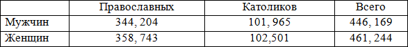

С принятием христианства возникли первые храмы. Главный приходской храм местечка Койданово именовался Свято-Покровским и размещался в центре селения, на возвышенном месте. Второй – представлял собой небольшую часовню, назывался Свято-Георгиевским и находился на местном кладбище. Точных сведений об основании и строительстве первых православных храмов в Койданово нет.
В начале 12 века в правление князя Глеба и его супруги Анастасии была образована Минская епархия. Позднее она не упоминается: в условиях раздробленности и вторжения монголов была упразднена даже Туровская епархия (от конца 13 века до 1390 года). [1, с. 16].
В 13 веке наблюдается процесс консолидации православных Великого княжества Литовского. Этому поспособстовала нарастаюшая угроза со стороны крестоносцев. Литовские князья-язычники, став на великое княжение, часто принимали православие. Известно, что сыновья Гедимина, женившегося на русских княжнах – Ольге Всеволодовне, княжне Смоленской, потом Евне, дочери Ивана Всеволодовича, исповедовали православие (кроме Кейстута). Исповедовали православную веру; 1) Наримунт или Глеб, князь Пинской и Туровский, раздававший земли Пинским монастырям, 2) Кориат или Михаил, князь Новогрудский, и дети его Александр и Константин; последний отказался от польской короны для сохранения православия, 3) Евнут (в православии Иоанн), князь Заславский, и его дети. Сыновья Ольгерда давали вклады православным монастырям (пример. Лаврышевскому) и оставались верными православию. [1, с. 22].
Кревская уния и Городельский привилей способствовали распространению католичества, но православие в Минском воеводстве преобладало. После Берестейской церковной унии дворяне и иные обитатели Минского воеводства в 1611 году приняли акт о несогласии с унией и о своем послушании Патриарху Константинопольскому. Оплотом православных верующих стал Минский Петро-Павловский монастырь. Известно, что православные игнорировали грамоты короля Сигизмунда III о запрете строить новые церкви в Минске, преследовать униатское духовенство и претендовать на земли, отошедшие к униатам. [1, с. 29] На защиту православиия стали князья Януш Радзивилл, Александр Огинский, Иван Любецкий и др. [1, с. 30]. Свидетельством успешного противостояния униатству является основание в первой половины 17 века в Минской епархии 12 новых монастырей. [1, с. 31]. Многие феодалы делали щедрые вклады в православное землевладение.
С середины 17 века религиозный вопрос стал инструментом, позволившим вмешаться в дела Речи Посполитой Российскому государству. Так, Виленским договором 1656 года царь Алексей Михайлович требовал искоренить унию и предоставить полную свободу богослужения православным.
В 1717 году польский сейм постановил отнять у православных все земли, запретить им богослужение и лишить всех прав на чины и должности гражданские. Для середины 18 века характерно жесткое противостояние католичества и униатства православной вере. Религиозный вопрос, а точнее притеснение диссидентов, стало одной из причин развала Речи Посполитой.
По воле императрицы Екатерины Великой на развалах Туровской епархии 13 апреля 1793 года была образована Минская епархия, включавшая 40 монастырей и более 250 приходских церквей трёх губерний – Минской, Изяславской и Брацлавской [1, с. 43]. Изначально центром Минской епархии был Слуцк, а с 1795 года – Минск [4].
Включение белорусских земель в состав Российской империи и ликвидация униатства в 1839 году, укрепили положение православия. Сведения о народонаселении 19 века, взятые из метрических книг и народных переписей (ревизий 1832, 1850, 1857 годов), дают представление о конфессиональном составе населения. [1] Так, в 1848 году в Минской губернии насчитывалось жителей:
Православные храмы местечка вошли в состав Минской епархии, включавшей в начале 20 века земли Бобруйского, Борисовского, Игуменского, Минского, Мозырского, Новогрудского, Пинского, Речицкого, Слуцкого уездов. [4]. Православное население местечка Койданово относилось к 3 и 2 благочиниям Минского уезда. По описи 1917 года 3 благочиние включало православные приходы совр. Столбцовского, Дзержинского, Узденского и Слуцкого районов. Большая часть современной Дзержинщины (центральные, западные, южные земли) относились к 3 благочинию; ко 2 благочинию – её северная часть, а небольшая часть юго-востока – к приходам совр. Узденского района. [прил. 1].
Этап советской истории – это «темные века» для христианства. Многие церкви потеряли свое функциональное значение, были закрыты или разрушены. В начале 1950-х годов митрополит Минский был единственным православным правящим архиереем на всю БССР, а территория Минской епархии охватывала всю территорию республики. Все изменилось в 1989 году, когда решением Священного Синода Русской Православной Церкви из состава Минской были выделены Могилёвская, Пинская и Полоцкая епархии. Образование новых епархий в пределах Белорусского Экзархата проходило в несколько очередей, и к 1992 году границы Минской епархии совпали с границами Минской области. С началом «перестройки» церковь начала возрождаться.
В 2014 году Священный Синод Русской Православной Церкви принял решение о выделении из состава Минской епархии ряда приходов Вилейского, Воложинского, Дзержинского, Молодечненского, Мядельского, Столбцовского и Узденского районов Минской области и образовании Молодечненской епархии. Так православные приходы Дзержинщины оказались в составе Молодечненской епархии. [4].
Благочиние – в Русской православной церкви часть епархии, объединяющая группу приходов, находящихся в непосредственной территориальной близости друг от друга.